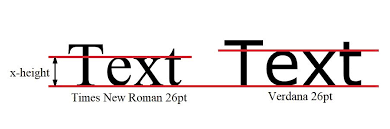

In this project we forecast flood and severe storm cost and frequency data using the Temporal Hierarchical Forecasting technique.
This article investigates the impact of Fintech on the Financial Inclusion Gender Gap in the Sub-Saharan African Region.
This RShiny app explores financial inclusion genderf gap and fintech data in the Sub-Saharan African Region.

This project employs comparative study of predictive algorithms to model Breast Cancer Recurrence using clinical data.

In this paper we employed experimental design techniques to investigate the effect of font size, style and medium on text comprehension.
Determining the age of an abalone can be a very time-consuming task. It involves tutting the shell through the cone, staining it, and counting the number of rings through a microscope. The age of an abalone is determined by then taking the number of rings and adding 1.5. This process as it is can be something researchers would wish to automate. Thus, we consider the task of building a predictive model that can take features of an abalone, and attempt to predict the age with high accuracy.
This app visually explores various freedom index data for 195 countries obtained from Freedom House from 2006 to 2024.